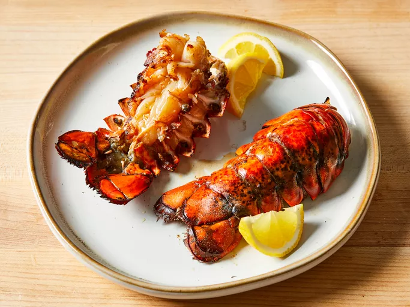

Grilled Lobster Tails

Ingredients
- 1 tablespoon lemon juice
- 1/2 cup olive oil
- 1 teaspoon salt
- 1 teaspoon paprika
- 1/8 teaspoon white pepper
- 1/8 teaspoon garlic powder
- 2 (10 ounce) lobster tails
Directions
- Gather all ingredients
- Preheat the grill for high heat and lightly oil grate
- Pour lemon juice into a small bowl; slowly whisk in olive oil. Whisk in salt, paprika, white pepper, and garlic powder until combined
- Split lobster tails lengthwise with a large knife, then brush flesh with some marinade.
- Place lobster tails flesh-side down on the preheated grill and cook, turning once and basting frequently with marinade until opaque and firm to the touch. 5 minutes on each side
Return to home page